Fotografia digital
Digital
Seleção de fotografia digital.
- Categoria
- Fotografia
- Função
- Fotografia digital
- Ano
- A definir
- Formato
- Digital
Sobre o
trabalho
Espaço para explicar o conceito, o processo e as referências da série fotográfica.
Conteúdo provisório
Série fotográfica
Fotografias
Mosaico fluido que preserva automaticamente a orientação e a proporção de cada imagem.
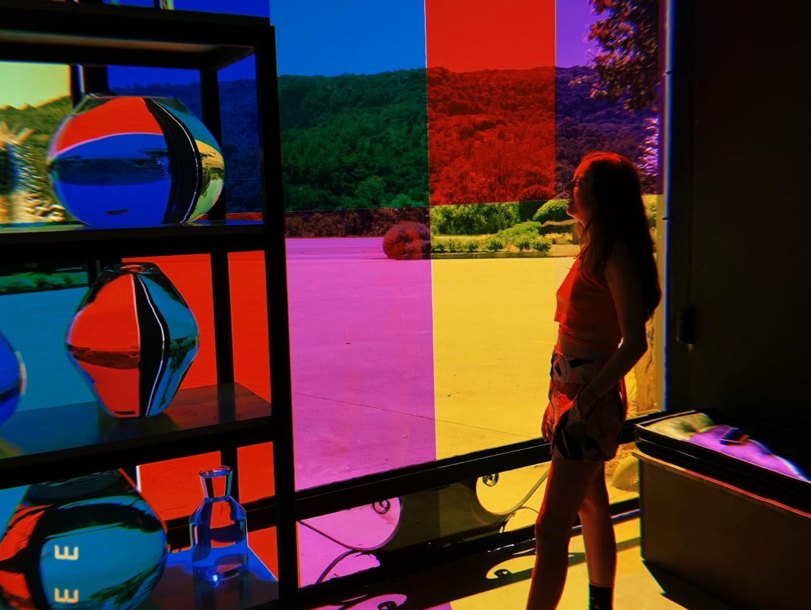
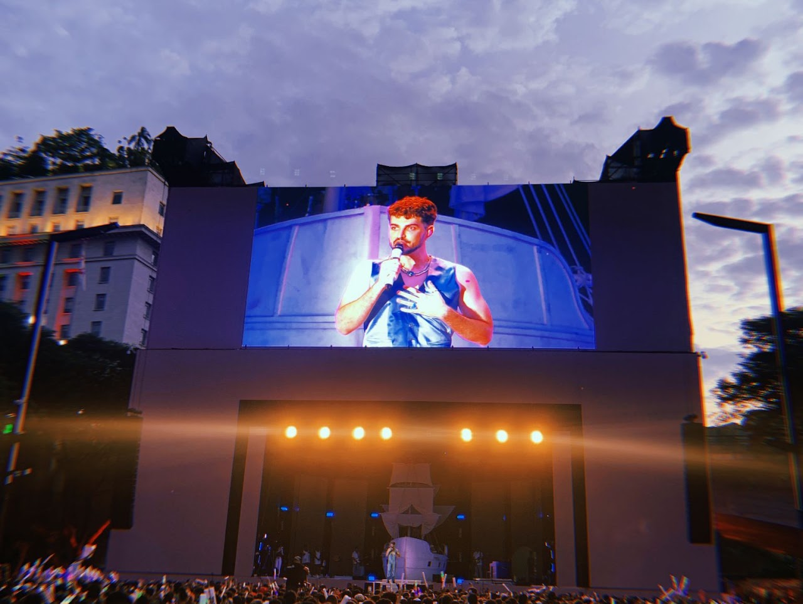
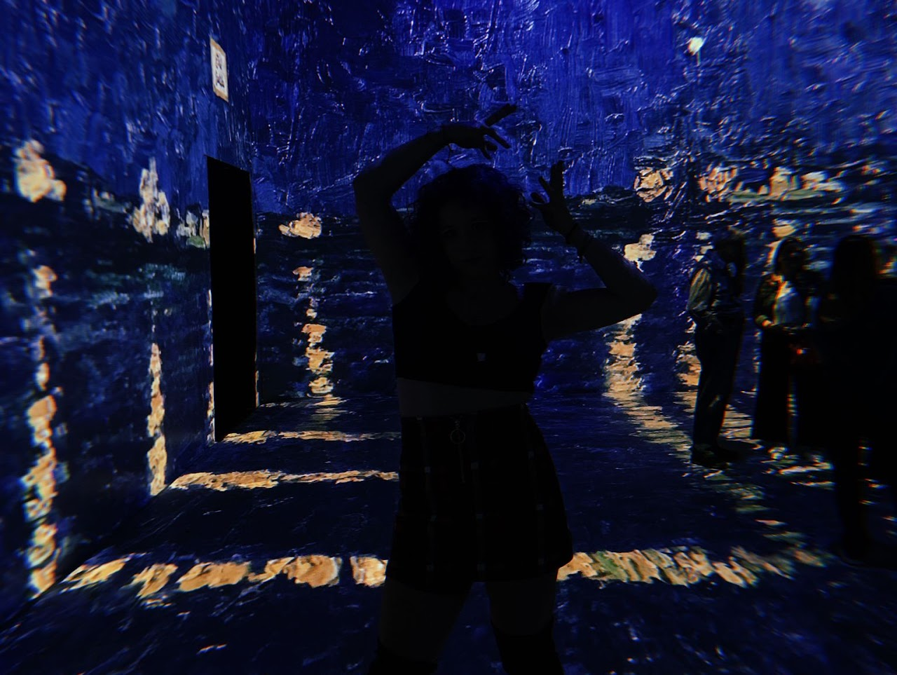
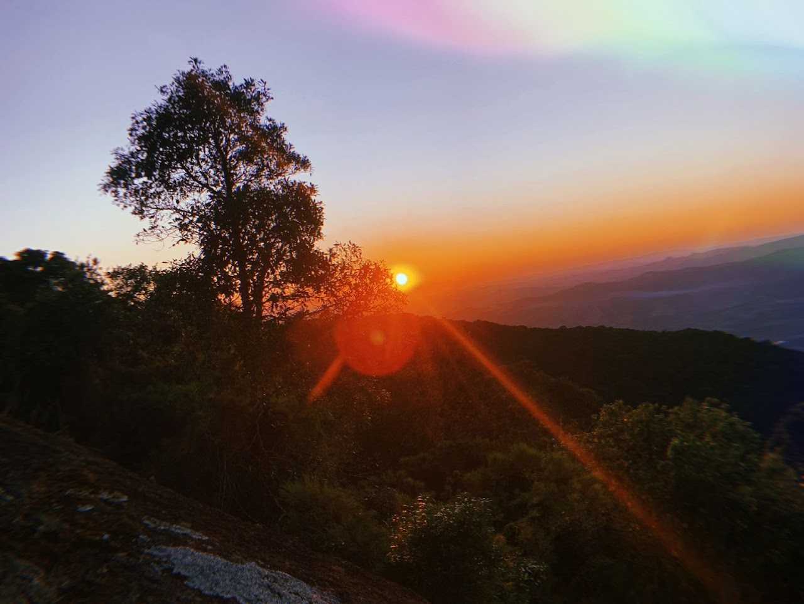
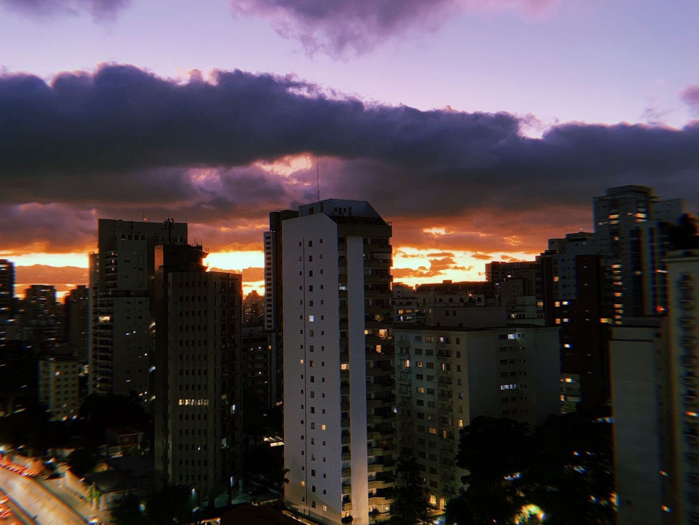
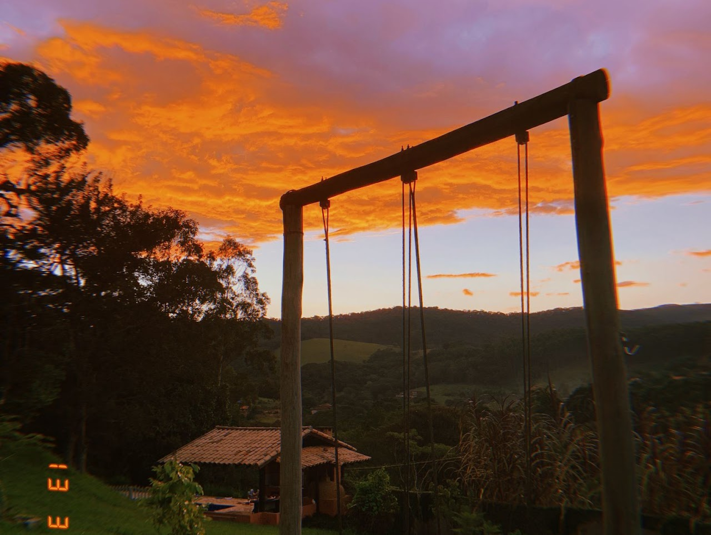
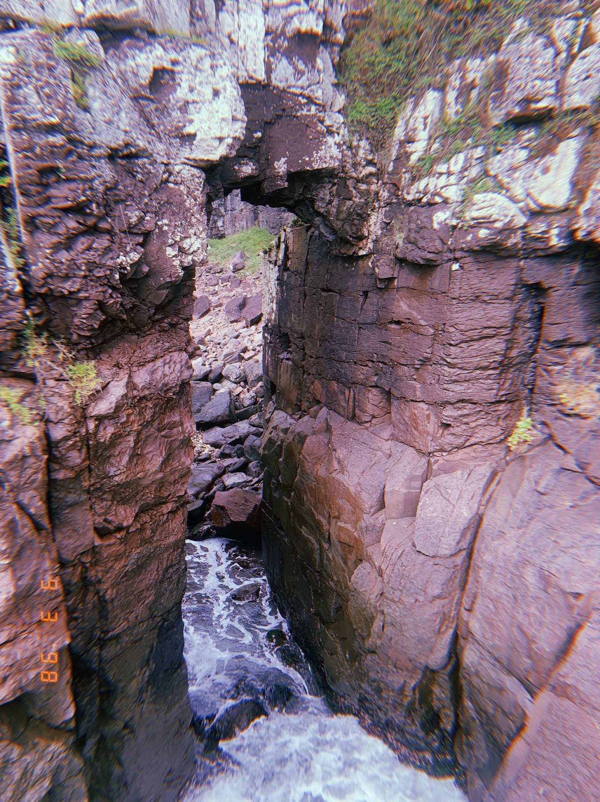
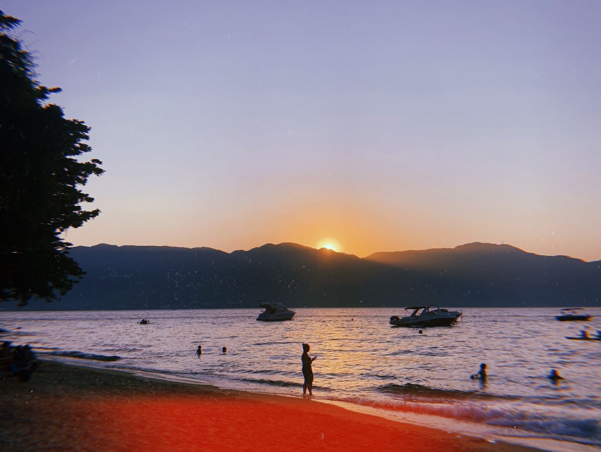
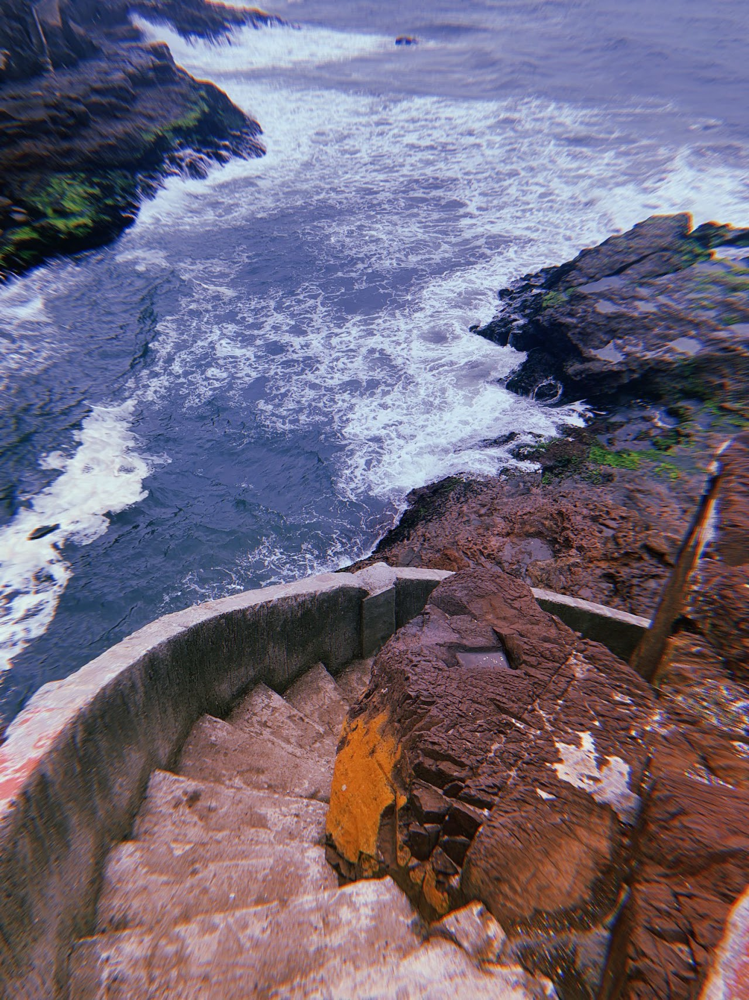
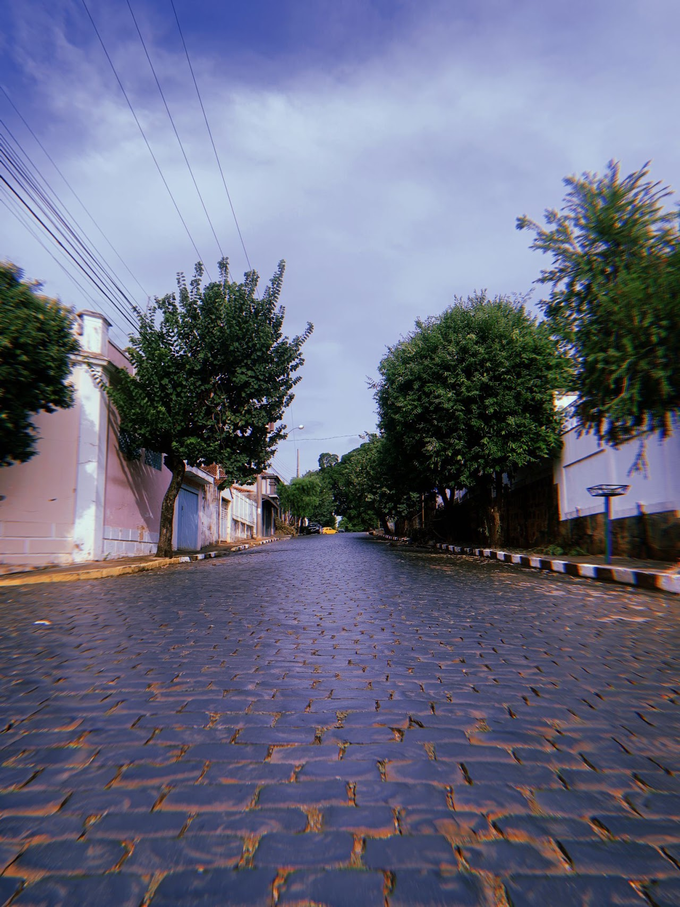
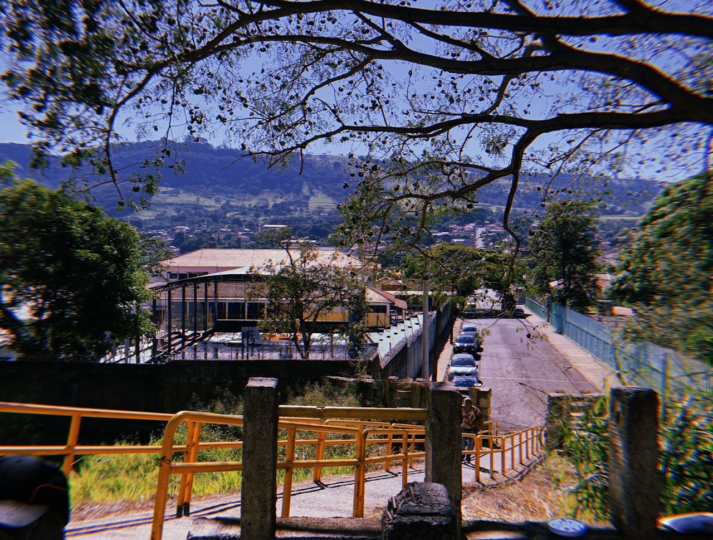
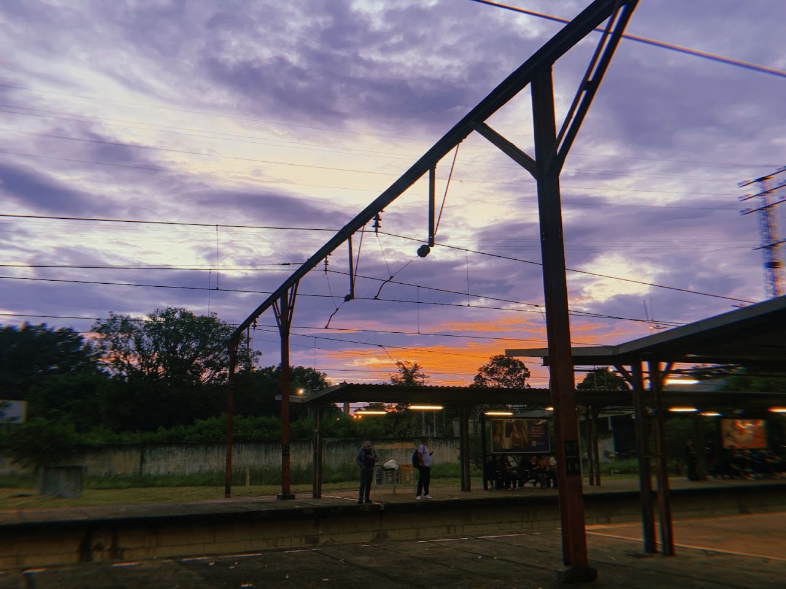
Ficha técnica
- Fotografia
- Julia Figueirôa
- Concepção
- Julia Figueirôa
- Tratamento
- A definir
- Ano
- A definir